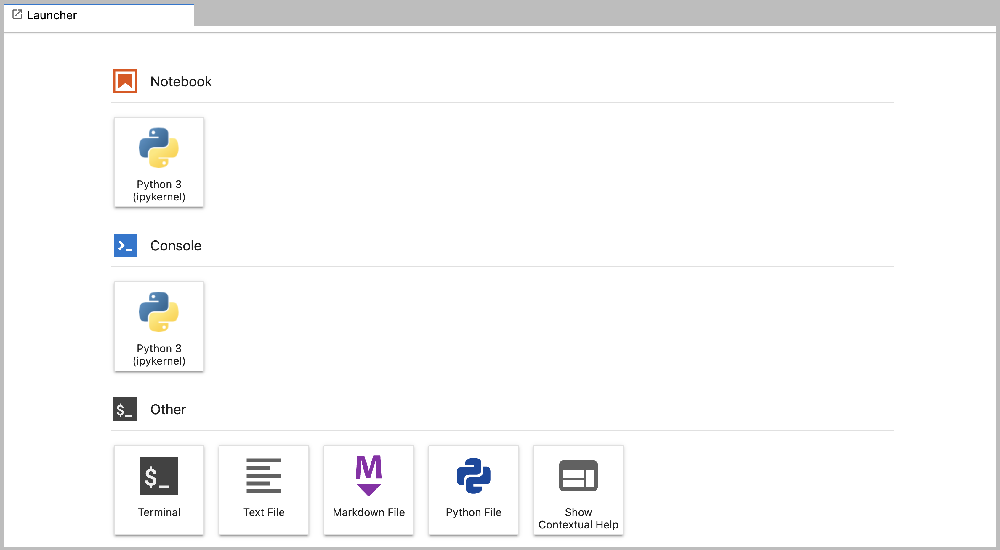

Running and Quitting
Launch the JupyterLab server. Create a new Python script. Create a Jupyter notebook. Shutdown the JupyterLab server. Understand the difference between a Python script and a Jupyter notebook. Create Markdown cells in a notebook. Create and run Python cells in a notebook.
This page is adapted from the Software Carpentry Python Gapminder lesson, Copyright (c) The Carpentries. The original material is licensed under the Creative Commons Attribution 4.0 International License (CC BY 4.0).
Changes made: Content has been modified and expanded by Innovations for Poverty Action (IPA) to include IPA-specific examples and context relevant to research data analysis.
Original citation: Achterberg, et al. (2024). swcarpentry/python-novice-gapminder: Software Carpentry: Plotting and Programming in Python (v2024.6.27.1). Zenodo. https://doi.org/10.5281/zenodo.12167686
- Launch the JupyterLab server.
- Create a new Python script.
- Create a Jupyter notebook.
- Shutdown the JupyterLab server.
- Understand the difference between a Python script and a Jupyter notebook.
- Create Markdown cells in a notebook.
- Create and run Python cells in a notebook.
To run Python, we are going to use Jupyter Notebooks via JupyterLab for the remainder of this workshop. Jupyter notebooks are common in data science and visualization and serve as a convenient common-denominator experience for running Python code interactively where we can easily view and share the results of our Python code.
There are other ways of editing, managing, and running code. Software developers often use an integrated development environment (IDE) like Visual Studio Code, or Positron to create and edit their Python programs. After editing and saving your Python programs you can execute those programs within the IDE itself or directly on the command line. In contrast, Jupyter notebooks let us execute and view the results of our Python code immediately within the notebook.
JupyterLab has several other handy features:
- You can easily type, edit, and copy and paste blocks of code.
- Tab complete allows you to easily access the names of things you are using and learn more about them.
- It allows you to annotate your code with links, different sized text, bullets, etc. to make it more accessible to you and your collaborators.
- It allows you to display figures next to the code that produces them to tell a complete story of the analysis.
Each notebook contains one or more cells that contain code, text, or images.
Getting Started with JupyterLab
JupyterLab is an application server with a web user interface from Project Jupyter that enables one to work with documents and activities such as Jupyter notebooks, text editors, terminals, and even custom components in a flexible, integrated, and extensible manner. JupyterLab requires a reasonably up-to-date browser (ideally a current version of Chrome, Safari, or Firefox); Internet Explorer versions 9 and below are not supported.
JupyterLab is included as part of the IPA recommended uv Python virtual environment set up in this repository. If you have not already installed the uv Python virtual environment, see the setup instructions for installation instructions.
In this lesson we will run JupyterLab locally on our own machines so it will not require an internet connection besides the initial connection to download and install uv and JupyterLab
- Start the JupyterLab server on your machine
- Use a web browser to open a special localhost URL that connects to your JupyterLab server
- The JupyterLab server does the work and the web browser renders the result
- Type code into the browser and see the results after your JupyterLab server has finished executing your code
JupyterLab is the next stage in the evolution of the Jupyter Notebook. If you have prior experience working with Jupyter notebooks, then you will have a good idea of what to expect from JupyterLab.
Experienced users of Jupyter notebooks interested in a more detailed discussion of the similarities and differences between the JupyterLab and Jupyter notebook user interfaces can find more information in the JupyterLab user interface documentation.
Starting JupyterLab
To start the JupyterLab server you will need to access the command line through the Terminal.
There are two ways to open Terminal on Mac.
- In your Applications folder, open Utilities and double-click on Terminal
- Press Command + spacebar to launch Spotlight. Type
Terminaland then double-click the search result or hit Enter
After you have launched Terminal, type the command to launch the JupyterLab server.
# Launch JupyterLab with uv
uv run jupyter labor activate your python virtual environment and run jupyter lab:
# Activate the virtual environment
.\venv\Scripts\activate
# Launch JupyterLab
jupyter labThe JupyterLab Interface
JupyterLab has many features found in traditional integrated development environments (IDEs) but is focused on providing flexible building blocks for interactive, exploratory computing.
The JupyterLab Interface consists of the Menu Bar, a collapsible Left Side Bar, and the Main Work Area which contains tabs of documents and activities.
Main Work Area
The main work area in JupyterLab enables you to arrange documents (notebooks, text files, etc.) and other activities (terminals, code consoles, etc.) into panels of tabs that can be resized or subdivided. A screenshot of the default Main Work Area is provided below.
If you do not see the Launcher tab, click the blue plus sign under the “File” and “Edit” menus and it will appear.

Drag a tab to the center of a tab panel to move the tab to the panel. Subdivide a tab panel by dragging a tab to the left, right, top, or bottom of the panel. The work area has a single current activity. The tab for the current activity is marked with a colored top border (blue by default).
Creating a Python script
- To start writing a new Python program click the Text File icon under the Other header in the Launcher tab of the Main Work Area.
- You can also create a new plain text file by selecting the New -> Text File from the File menu in the Menu Bar.
- To convert this plain text file to a Python program, select the Save File As action from the File menu in the Menu Bar and give your new text file a name that ends with the
.pyextension.- The
.pyextension allows everyone (including the operating system) know that this text file is a Python program. - This is convention, not a requirement.
- The
Creating a Jupyter Notebook
To open a new notebook click the Python 3 icon under the Notebook header in the Launcher tab in the main work area. You can also create a new notebook by selecting New -> Notebook from the File menu in the Menu Bar.
Additional notes on Jupyter notebooks.
- Notebook files have the extension
.ipynbto distinguish them from plain-text Python programs. - Notebooks can be exported as Python scripts that can be run from the command line.
Below is a screenshot of a Jupyter notebook running inside JupyterLab. If you are interested in more details, then see the official notebook documentation.

- The notebook file is stored in a format called JSON.
- Just like a webpage, what’s saved looks different from what you see in your browser.
- But this format allows Jupyter to mix source code, text, and images, all in one file.
In the JupyterLab Main Work Area you can arrange documents into panels of tabs. Here is an example from the official documentation.

First, create a text file, Python console, and terminal window and arrange them into three panels in the main work area. Next, create a notebook, terminal window, and text file and arrange them into three panels in the main work area. Finally, create your own combination of panels and tabs. What combination of panels and tabs do you think will be most useful for your workflow?
After creating the necessary tabs, you can drag one of the tabs to the center of a panel to move the tab to the panel; next you can subdivide a tab panel by dragging a tab to the left, right, top, or bottom of the panel.
Code vs. Text
Jupyter mixes code and text in different types of blocks, called cells. We often use the term “code” to mean “the source code of software written in a language such as Python”. A “code cell” in a Notebook is a cell that contains software; a “text cell” is one that contains ordinary prose written for human beings.
The Notebook has Command and Edit modes
- If you press Esc and Return alternately, the outer border of your code cell will change from gray to blue.
- These are the Command (gray) and Edit (blue) modes of your notebook.
- Command mode allows you to edit notebook-level features, and Edit mode changes the content of cells.
- When in Command mode (esc/gray),
- The b key will make a new cell below the currently selected cell.
- The a key will make one above.
- The x key will delete the current cell.
- The z key will undo your last cell operation (which could be a deletion, creation, etc).
- All actions can be done using the menus, but there are lots of keyboard shortcuts to speed things up.
In the Jupyter notebook page are you currently in Command or Edit mode? Switch between the modes. Use the shortcuts to generate a new cell. Use the shortcuts to delete a cell. Use the shortcuts to undo the last cell operation you performed.
Command mode has a grey border and Edit mode has a blue border. Use Esc and Return to switch between modes. You need to be in Command mode (Press Esc if your cell is blue). Type b or a. You need to be in Command mode (Press Esc if your cell is blue). Type x. You need to be in Command mode (Press Esc if your cell is blue). Type z.
Use the keyboard and mouse to select and edit cells
- Pressing the Return key turns the border blue and engages Edit mode, which allows you to type within the cell.
- Because we want to be able to write many lines of code in a single cell, pressing the Return key when in Edit mode (blue) moves the cursor to the next line in the cell just like in a text editor.
- We need some other way to tell the Notebook we want to run what’s in the cell.
- Pressing Shift+Return together will execute the contents of the cell.
- Notice that the Return and Shift keys on the right of the keyboard are right next to each other.
The Notebook will turn Markdown into pretty-printed documentation
- Notebooks can also render Markdown.
- A simple plain-text format for writing lists, links, and other things that might go into a web page.
- Equivalently, a subset of HTML that looks like what you’d send in an old-fashioned email.
- Turn the current cell into a Markdown cell by entering the Command mode (Esc/gray) and press the M key.
In [ ]:will disappear to show it is no longer a code cell and you will be able to write in Markdown.- Turn the current cell into a Code cell by entering the Command mode (Esc/gray) and press the y key.
Markdown does most of what HTML does
| Markdown code | Rendered output |
|---|---|
|
|
|
|
|
|
|
A Level-1 Heading |
|
A Level-2 Heading (etc.) |
|
Line breaks don’t matter. But blank lines create new paragraphs. |
|
Links are created with |
Create a nested list in a Markdown cell in a notebook that looks like this:
- Get funding.
- Do work.
- Design experiment.
- Collect data.
- Analyze.
- Write up.
- Publish.
This challenge integrates both the numbered list and bullet list. Note that the bullet list is indented 2 spaces so that it is inline with the items of the numbered list.
1. Get funding.
2. Do work.
- Design experiment.
- Collect data.
- Analyze.
3. Write up.
4. Publish.What is displayed when a Python cell in a notebook that contains several calculations is executed? For example, what happens when this cell is executed?
7 * 3
2 + 1Python returns the output of the last calculation.
3What happens if you write some Python in a code cell and then you switch it to a Markdown cell? For example, put the following in a code cell:
x = 6 * 7 + 12
print(x)And then run it with Shift+Return to be sure that it works as a code cell. Now go back to the cell and use Esc then m to switch the cell to Markdown and “run” it with Shift+Return. What happened and how might this be useful?
The Python code gets treated like Markdown text. The lines appear as if they are part of one contiguous paragraph. This could be useful to temporarily turn on and off cells in notebooks that get used for multiple purposes.
x = 6 * 7 + 12 print(x)Standard Markdown (such as we’re using for these notes) won’t render equations, but the Notebook will. Create a new Markdown cell and enter the following:
$\sum_{i=1}^{N} 2^{-i} \approx 1$(It’s probably easier to copy and paste.) What does it display? What do you think the underscore, _, circumflex, ^, and dollar sign, $, do?
The notebook shows the equation as it would be rendered from LaTeX equation syntax. The dollar sign, $, is used to tell Markdown that the text in between is a LaTeX equation. If you’re not familiar with LaTeX, underscore, _, is used for subscripts and circumflex, ^, is used for superscripts. A pair of curly braces, { and }, is used to group text together so that the statement i=1 becomes the subscript and N becomes the superscript. Similarly, -i is in curly braces to make the whole statement the superscript for 2. \sum and \approx are LaTeX commands for “sum over” and “approximate” symbols.
Closing JupyterLab
- From the Menu Bar select the “File” menu and then choose “Shut Down” at the bottom of the dropdown menu. You will be prompted to confirm that you wish to shutdown the JupyterLab server (don’t forget to save your work!). Click “Shut Down” to shutdown the JupyterLab server.
- To restart the JupyterLab server you will need to re-run the following command from a shell.
# via uv
uv run jupyter lab
# or activate your python virtual environment and run
jupyter labPractice closing and restarting the JupyterLab server.
- Python scripts are plain text files.
- Use the Jupyter Notebook for editing and running Python.
- The Notebook has Command and Edit modes.
- Use the keyboard and mouse to select and edit cells.
- The Notebook will turn Markdown into pretty-printed documentation.
- Markdown does most of what HTML does.